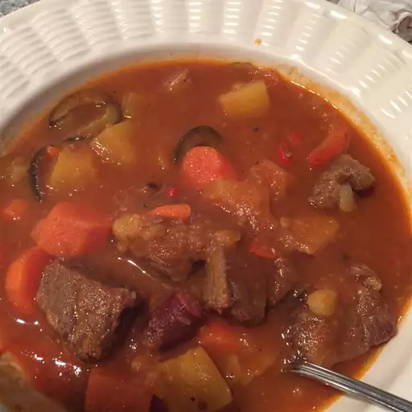

Caldereta

Description
A Filipino beef stew traditionally cooked with goat, but it's usually not available in most markets. You can get creative with this dish such as adding garbanzo beans, peas, and raisins. Optional: add 4 ounces of liver pate in place of tomato paste. Serve hot over a bed of rice.
Ingredients
- 3 tablespoons vegetable oil
- 1 1/2 pounds cubed beef stew meat
- salt and ground black pepper to taste
- 3 cloves garlic, crushed
- 3 cups water
- 1/2 cup unsweetened pineapple juice
- 1 onion, chopped
- 1 (14 ounce) can tomato sauce
- 1/4 cup tomato paste
- 2 red potatoes, diced
- 1 red bell pepper, diced
- 1 large carrot, diced diagonally
- 1/2 pound miniature cocktail sausage
- 1 (8 ounce) can pineapple chunks, undrained
- 1 (6 ounce) can medium pitted ripe olives, drained
- 3 large bay leaves
- 1 tablespoon hot pepper sauce (such as Tabasco) (optional)